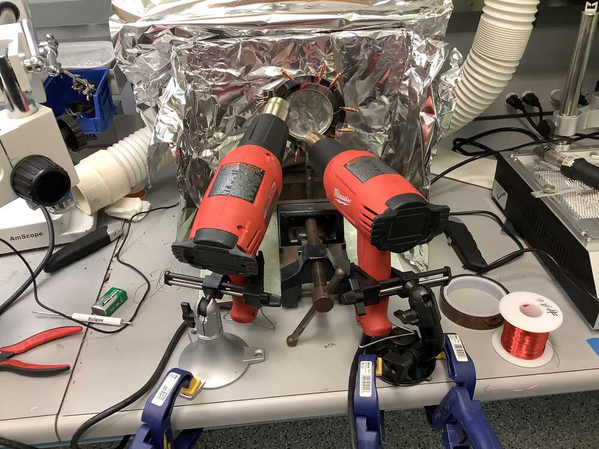
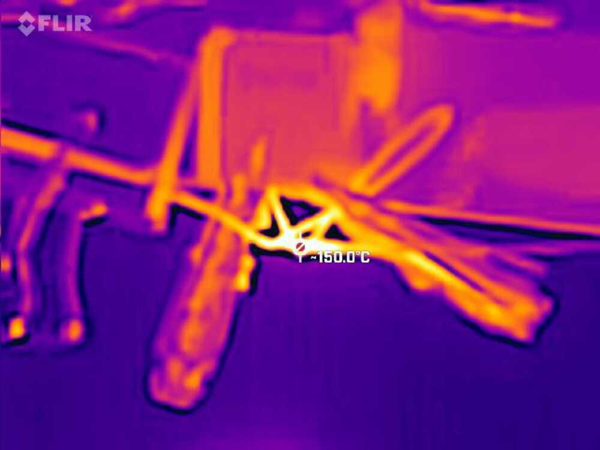

Oct 20, 2021
Assignments
- Read the data sheet for your microcontroller
- Program your board to do something
- Compare the performance and development workflow for other architectures
1. SAMD11C datasheet
Scanning the 981 page datasheet, I was particularly curious about using capacitive touch with the D11C microcontroller.
Page 854 goes over different architectures for self- and mutual-capacitance. I wanted to try out the self-capacitance functionality and create a Makey-Makey esque fruit controller.

However, I found that (according to this) access to Atmel’s Peripheral Touch Controller (PTC) is close-sourced and hence not accessible through the Arduino IDE.
Libre PTC is a casual library that attempts to provide access to the PTC functionality by reverse engineering. Unfortunately, I got stuck in the same way as in one of the issues on the GitHub repo. Perhaps the library has become outdated since it was last updated 4 years ago.
2. Do something

I had already gotten my board to work in Week 5, and I wanted to try extending it with capacitive touch functionality. While trying to get Atmel PTC to work, I found that when I did not set up the D11C internal pull up resistor, my finger could actually trigger the LED without directly pressing the button. Funny!
I have been very curious about shape memory wire for some time, so I also wanted to make another board that can be used to actuate nitinol wire, perhaps like a blooming flower.
To start, I tried to train the wire to form a petal shape. This involved bringing the wire up to 500°C for ten minutes. I tried different arrangements attached to various metal paraphernalia to see what would work best.

However, my makeshift oven set up at the EECS shop was not able to control temperature very well. One hot air gun was insufficient to bring the temperature up to spec, so I used two (making sure to connect to different outlets). The aluminium foil helped to contain heat, but sometimes worked a little too well, and it also made it more difficult to regulate the temperature and keep an eye on progress. Moreover, the multimeter thermometer is not suited for such high temperatures and the cable would brown if held near the heat for an extended time. Special thanks to Anthony, Carson, and Jax, for bearing with the heat while I experimented!

I also tried to use a thermal camera to track the temperature, however this again was limited.

Here after “training” the wires were connected to 5V (max 1A) to simulate USB power.
This wire had to be nudged for it to overcome tension:
In the above two cases the wires did move… but not back to their exact previous forms as desired. Besides the lack of oven temperature control, I found that complex shapes were difficult to re-inflate bceause of their internal tensions and underconstrained nature after being released from their “molds”. Creating one petal at a time worked better.
I designed another PCB that will be used to create a blooming flower. An N-channel MOSFET is used to conect each of the 5 petals in parallel to 5V.


Sadly the Roland machine failed me this week as the traces look scraggly and broken in places. Maybe the end mill had gone dull? I will have to further investigate.

3. Architecture comparisons
It appears that all of us in the EECS section used the D11C architecture. For the above project, I also considered using an ATTiny chip as it would allow me to skip the 3.3V regulator. However, it has a different programming method and would not have a USB connector.
For ease of implementing capacitive touch, I could also have used a D21C microcontroller, as Adafruit had worked with Atmel (allegedly) to create a QTouch-compatible library for these chips.